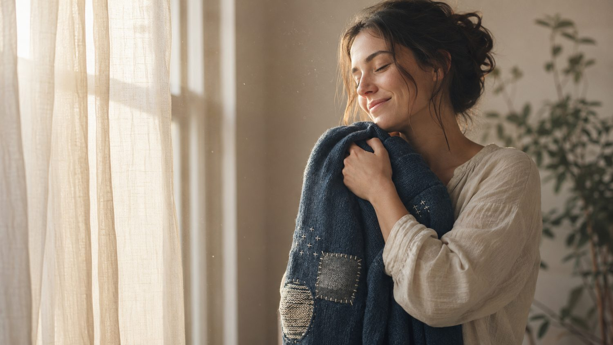
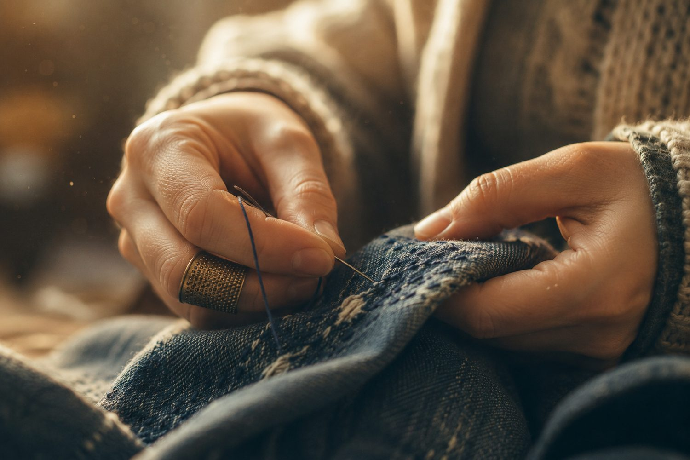
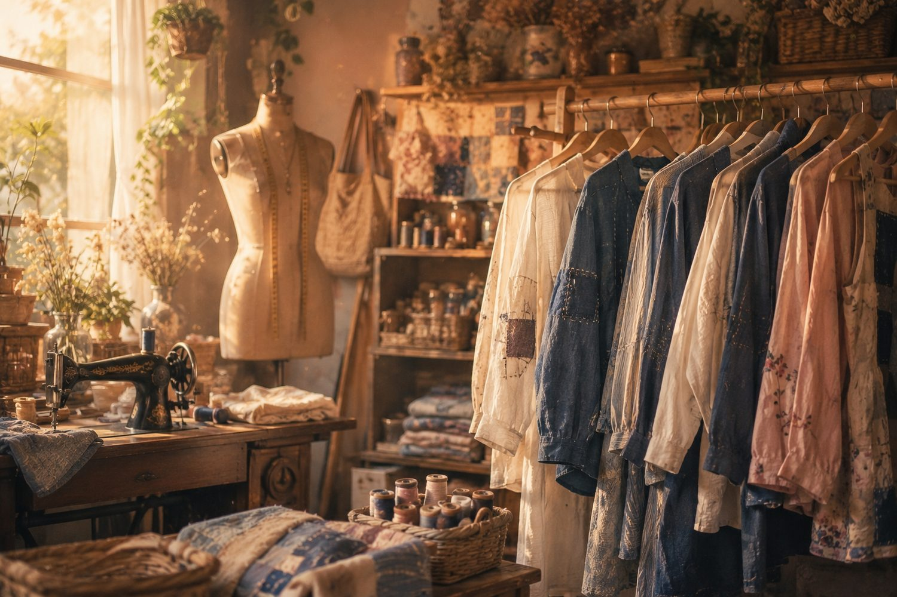
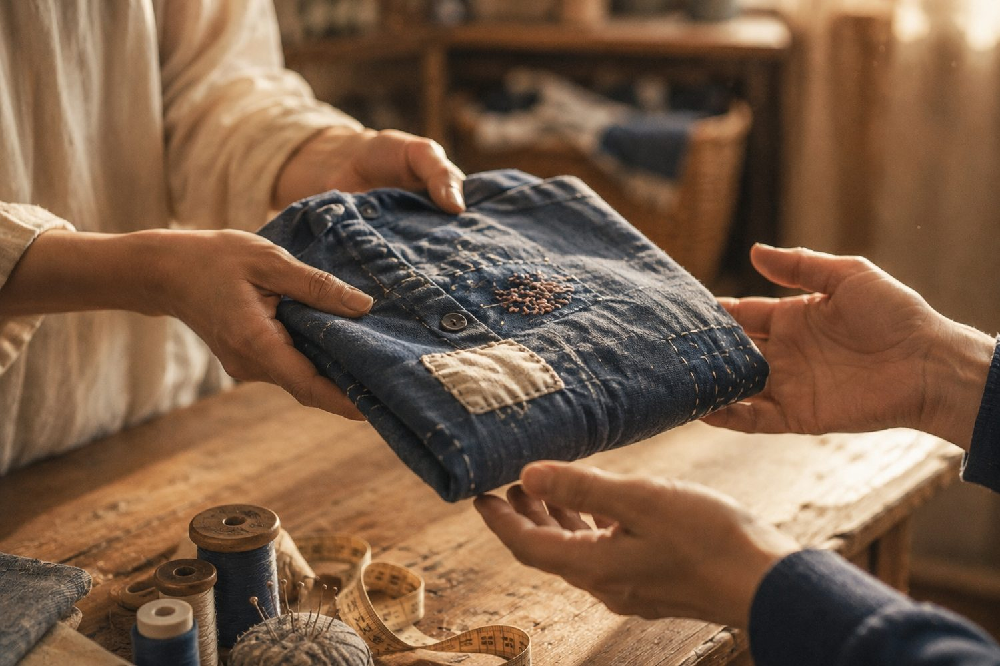

세상에서 가장 아름다운 옷은,
이미 당신 곁에 있습니다.
새로 사지 않아도 좋아요. 오래 입은 옷일수록 더 많은 이야기를 품고 있으니까. 텍스토피아는 바로 그 ‘옷의 기억’에서 시작된 이야기입니다.

버려지는 건 천이 아니라,
누군가의 계절이에요.
전 세계에서 한 해에 버려지는 옷과 섬유가 1억 2천만 톤. 그중 대부분이 태워지거나 땅에 묻히고, 새 실로 다시 태어나는 건 1%도 되지 않습니다. 예를 들어 한국에서도 해마다 약 11만 톤의 옷이 버려져요. 그 안에는 누군가의 첫 출근과 마지막 인사, 늘어난 소매에 밴 온기가 함께 묻힙니다.
가장 친환경적인 옷은,
이미 존재하는 옷입니다.
디자인 학자 조너선 채프먼은 이것을 ‘정서적 내구성(emotional durability)’이라 불렀어요 — 오래 사랑하는 물건일수록 오래 남는다는 것. 소재를 바꾸고 재활용을 늘리는 것보다, 한 벌을 아끼고 오래 입게 만드는 마음이 가장 강력한 해법이라는 이야기입니다.
텍스토피아의 수선사 이서가 옷에 담긴 기억을 읽는 이야기는, 사실 우리 모두가 이미 아는 진실에서 출발합니다. 늘어난 소매 하나에도 누군가를 자주 안았던 시간이 남아 있다는 것. 옷을 오래 입는 건 낡는 게 아니라, 이야기가 깊어지는 일이라는 것.

“가장 영향이 적은 옷은, 아마도 이미 존재하는 그 옷일 것이다.”— 정서적 내구성 디자인, 조너선 채프먼
다정함은, 이미 세계의 흐름입니다.
옷을 아끼고, 고치고, 다시 잇는 일. 이건 낭만이 아니라 가장 빠르게 커지는 미래예요. 세계의 브랜드들이 먼저 증명하고 있습니다.
“이 재킷을 사지 마세요”
2011년 블랙프라이데이, 덜 사라고 광고한 브랜드. 오히려 신뢰를 얻어 매출이 30% 늘고, 2017년 연 10억 달러 브랜드가 됐어요. 그 중심엔 수선·재사용(Worn Wear)이 있었습니다.
소각 대신, 단 하나뿐인 옷
해마다 태워지던 수십억 원대 재고를 업사이클해 세상에 하나뿐인 옷으로 되살립니다. 2012년 시작해 수만 벌을 되살렸고, 수선·리폼 아틀리에도 열었어요.
2030년, 3,930억 달러
중고 의류 시장은 새 옷보다 두 배 빠르게 자라, 2030년 약 3,930억 달러 규모로 커집니다. 그 성장의 70%를 잘파세대가 이끌고 있어요.
옷을 아끼는 일은 낭만이 아니라, 가장 빠르게 커지는 미래입니다.

텍스토피아의 네 가지 약속
이야기를 먼저.
버리기 전에, 그 옷의 기억을 먼저 읽습니다. ‘이서의 리딩’으로 옷 한 벌의 사연을 남기는 문화를 만들어요. 버리는 손을 잠깐 멈추게 하는 한 문장을.
만들지 않고, 전합니다.
텍스토피아의 굿즈는 재고도 폐기도 없는 디지털에서 출발합니다. 태워질 물건을 새로 만들지 않는 것 — 그것이 옷 이야기를 파는 우리가 지켜야 할 최소한이라 믿어요.
버리지 않고, 잇습니다.
옷을 쓰레기가 아니라 다음 사람에게. 옷의 기억을 이야기와 함께 이어주는 순환 — 중고·업사이클·리폼을 텍스토피아의 방식으로 준비하고 있어요.
받은 것을, 되돌립니다.
이야기로 얻은 것의 일부를 다시 옷과 지구로. 매출의 1%를 의류 순환과 수선 문화에 돌려보내는 것을, 우리의 약속으로 삼습니다.

함께, 실을 이어요
당신의 옷에도 이야기가 있어요. 버리기 전에, 한 번 읽어봐 주세요.
출처
전 세계 섬유 폐기물·재활용률·손실 가치: BCG, “From Waste to Worth” (2025) · 국내 폐의류: 한국투데이 (2024) · 정서적 내구성: Première Vision · Jonathan Chapman · Patagonia: “Don’t Buy This Jacket” · RE;CODE: 뉴스펭귄 · 중고 시장: ThredUp 14th Resale Report (2026)